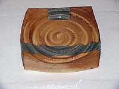

| Elements
Curator and Art Critic Uma Nair discusses 'Elements',
a show of 6 Indian and 12 international ceramic artists in Delhi.
A booming Indian market
A ceramic exhibition that brings together 6 Indian
and 12 international ceramic artists could either pick up the thread
while severing the continuity or speak about crossing over of cultural
trends in the idiom of ceramic making in a world that has come to
recognize it as an art form. Forget the debate about craft/art but
the fact that Marcio Mattos of England sold out and a number of
international potters sold well on Indian terra firma aptly proved
that India is a market to look out for in terms of ceramics. Delhi
Blue Pottery has in the past brought together a number of exhibitions
in the ceramic frontier but in a way this show could speak about
the technicalities of choice, the parameters of bias and the refreshing
angles of international trends proving that India has found its
own niche in the language of ceramics.
A ceramic work can either have the authoritative
power and hypnotic grace of the surface of the sea, or it can come
down to mundane mediocrity, In the hands of a ceramic artist who
can understand and weave nature’s prowess into clay it can
reflect the sheer face of a mountain cliff or the sweep of a plain
of grass — yet without any recourse to illusion, metaphor
or representation, be a work that truly invites a heartfelt response.
Think of ceramic works as cultural equivalents rather than natural
embodiments, think of them as reflective absorptions rather than
pedestrian churnings that have come off the wheel and Elements in
the capital city of India came through as a mixed bag, a cocktail
of concoctions that held sublime bliss and also brought indifferent
reponses to a grand expectation.
India’s Hamada
'The art of ceramics is one that brings signs of
pleasure in a variety of guises', said potter and teacher Kristine
Michael to me 15 years ago during a solo showing. In a quixotic
way Kristine is not part of this show, neither are some of the best
names in the Indian circuit but in terms of what the Indian 6 have
to offer the only works that came upto facing a definitive critical
appreciation were the works of mendicant Vineet Kacker.The symbol
of a sacred script, the lingua franca of vintage simplicity. the
lucid languor of a dulcet toned glaze that presents cultural connections.
Vineet’s works were a set of three creations in a meditative
mould. Earth Mandala, Bodhisattva and Sidham-Platter Karma.The Earth
Mandala platters looked more like stone reliefs that whispered the
tenets of erosional counterpoints. All three Earth Mandalas somehow
miraculously evoked the conjunction of land, winds, sky and sea.
It is almost as if within this singular construct Vineet gave us
the space of a primordial shoreline where timeless stability and
constant vacillation continuously trade places.
Vineet Kacker:

Vineet’s Siddhi-Platter Karma in stoneware spoke in the vein
of a flashback to the aura of antiquity. Against a tenured glaze
that spoke of rough-hewn porocity, with the symbol just making a
significant yet autocratic signature this work is more like a scripted
tenet that travels through time. His series Bodhisattva platters
had about them the deeply felt resonance of a ruminative distinction,
a warming softness of intent that spoke in softened hues about the
Buddhist leanings that venerate the chant but distill it in its
cadences of inner silence. Why Vineet’s work stood head and
shoulders above the rest of the works in the show was essentially
because he was able to present a ceramic exercise that weaves into
its recesses the quiet dignity of a meditative mould. It wouldn’t
be wrong to say that Vineet is indeed the Shoji Hamada of India
essentially because he has been able to translate the dictums of
indigenous strains and tenets into his ceramic works by giving it
a deeply felt reflective rhythm that does not shout but whispers
into its abyss of quietude.
Earthy Tenors
Then there was Abhay Pandit whose small pots and platters spoke
of the sand dunes of Rajasthan.He played with the sandy textures
of an ochre toned soda firing to give nuanced textures of the play
of wind on sand. Between the indigo tinted blues and the encrustations
of sandy earthiness some of his works spoke of greater things to
come.
Abhay Pandit:
Vinod Daroz disappointed greatly for his repetitive
schemations that failed to touch a chord, Jyotsna Bhat the icon
of contemporary pottery also disappointed greatly specifically because
the works looked old and somewhat uninspiring.
Vinod Daroz:
Jyotsna Bhat:
Yet none of the others could strike a response but actually exciting
for its sense of moulding earthy tenors into smoky roughened was
the stoneware paper clay with textural glazes of Marcio Mattos who
was inspired by the terracotta cups that served tea in Indian trains.
Surface texture is the hallmark of his brilliance in handling his
works and all his works in the show spoke of an understanding of
the lyrical odes to autumn, here was a resistant yet reflective
tonality of Shelley’s autumn leaves metamorphosed into the
grains of sand and earth, speaking more in the vein of an Indian
raga riveting in its andante which we call alaap. Playing between
the inherent strength of blackened hectic sienna rusted tones his
work seemed to be only an integration of a warm, fleshy ground is
interrupted by pours of colour, splashes and clumps of abstracted
color-streaks, which appeal to a sense of visual tactility.
Kaif Ghaznavi:
Romance, violence, eroticism, mystery, nobility, languor, and
exoticism delineated the raku fired glazes of Roland Summer who
captured an enraptured cloud of infinite silhouettes on his pots
and bowls, launching an abiding fascination with the rhythms of
nature that infused staid European air-in some ways he brought back
the recall of incense wafting through the ambience with his textures.
The application of the sense of cloudy texturing in his raku brought
on by the carbon markings suggest an innate fluidity that yields
a smooth, consistent surface across the image. The continuity of
the texturing reveals a softened sensuality that does not overpower
but speaks more like a refrain and you realize that in the perfected
art of the glaze within the firing Roland is more photographic than
painterly, without being stylistically Realist. Seamless and somewhat
distinctive in his ability to recreate magic from within and without
his ceramic ware were perfect from the inside as well as the outside.
For Roland the weaving of carbon is akin to paint-it helps the pot
in question to accept — the mutations of sudden, dramatic
and no doubt possible gaps in space. Yet it also suggests the power
of the incidental in the act of cooling.
Roland Summer:
Western Ferment
Then there was the woven platter, earthenware dipped and sprayed
glaze of Ana Fitzpatrick that spoke of perceived refinement, delicacy
and sophistication of civilized Western culture, which held the
Orient in its hand as both barometer and shadowbox. Of particular
intrigue was her vermillion-toned platter, which held a small bowl
within. Fired in that otherworldly, blanching light peculiar to
the sunny skies of Italy, the platter itself became a vital destination
for Ana’s artistic pilgrimage. Ana’s woven platters
gave a kind of visual addiction to the harmony of inherent hues
of extraordinary convolution.
Ana Fitzpatrick:
Speaking of convolutions, two potters who stood out for the fascinating
process that brought them to their end result were Jane Gibson and
Janet Mansfield. Jane’s thrown pots fumed with sulphates in
a paper kiln spoke of her intoned ability to understand the workings
of smoky embers and the divisional dictums of the co-existence of
opposites. Beguiled by both organic and inorganic achievement, the
intricate matrix of form and function that propels the natural world,
myriad moorings in the coming together of the play of white and
blackened calculative tonalities on her pots give them a candidness
that echoes not only the brink of alchemy and magic, but also the
prescient brilliance and longing to simulate the structures fundamental
to the firing performance with paper in the kiln.
Marcio Mattos:
In some ways Janet Mansfield’s works that tempered the reaches
of salt glaze and wood fired techniques took one back to the feverish
passages of Antonio Vivaldi's Four Seasons, look deeper and closer
and you could detect a hint of micro emulation found in fossilized
stained glass cathedral windows in dragonfly wings, fishing nets
docked in space with an encrustation of spider webs, Japanese wagashi
in cherry blossoms and frozen pine boughs, and an ancient scholar's
rocks in pluming smoke and rolling ocean waves.
Critic’s Conclusion
This show Elements spoke of residual reverberations in time, about
nature’s role in the impregnation of creativity in the world
of clay. Certainly in the hands of an adept studio potter a pot
can be the result of a ritual that is resonant with in-depth rhythms
in the rites of passage. Yet one of the more resonant echoes of
the human imperative to venerate nature by virtue of mirroring is
what brings about an awakening. In its ability to say so many things
Elements evolved in both materials and technique to embody the strongly
didactic structure and singular, intrinsic properties of the exploration
of ceramics.
Between sumptuous syncopations, with its refined use of multiple
carved patterns to create remarkable depth in the lush masterfully
delineated textures and glazes the show oscillated between innate
chemistry to mediocre mimicry. Another curious, rather esoteric,
parallel can be drawn, owing its analogous properties to the coarse/fine
poetry of labor and aging; the passage of time evoked by the human
hand is indeed paramount. In clay a compositional maneuver can be
revitalizing and refreshing.Considering the vast regal space of
the Visual Arts Gallery one would have liked a few more potters,and
a few more works.Too few works in such a magnificent space can seem
dwarfed.Perhaps a few more names in the Indian ceramic scene would
have added both magic and caprice.
UMA NAIR
CURATOR,
CRITIC ASIAN AGE INDIA
More Articles
|
{kind=link}
{kind=link}
{kind=link}
{kind=link}
{kind=link}
{kind=link}
{kind=link}
{kind=link}
{kind=link}
{kind=link}
{kind=link}
{kind=link}
{kind=link}
{kind=link}
{kind=link}
{kind=link}
{kind=link}
{kind=link}